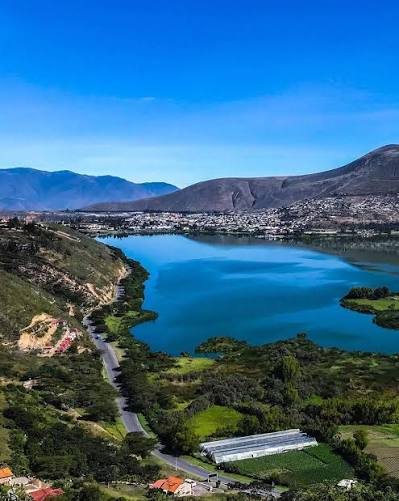

01
Laguna de Yahuarcocha
A 3 km del centro de Ibarra
Laguna de origen glaciar cuyo nombre kichwa significa “lago de sangre”. Su entorno es ideal para contemplar el atardecer.
Actividad: ciclismo, caminata y fotografía.